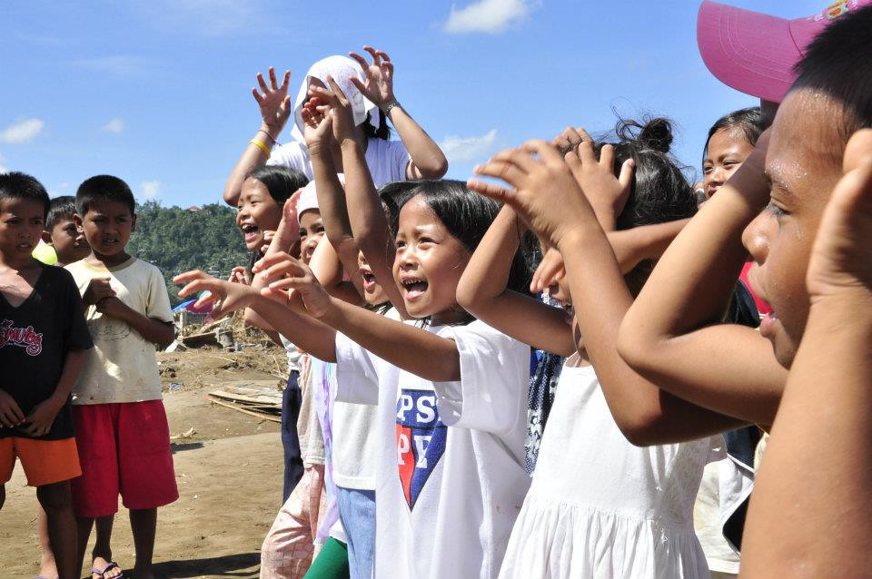
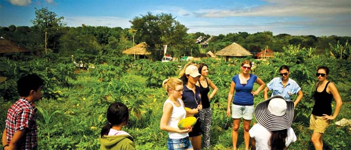
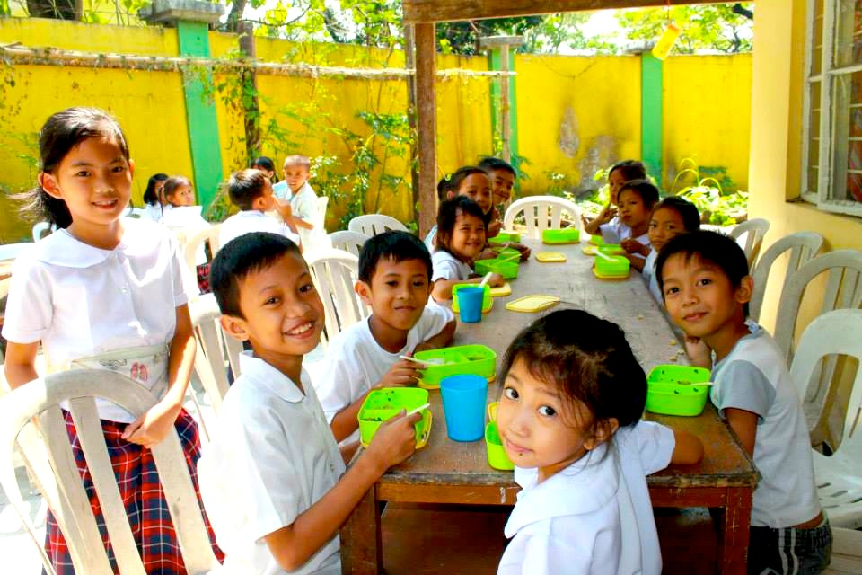
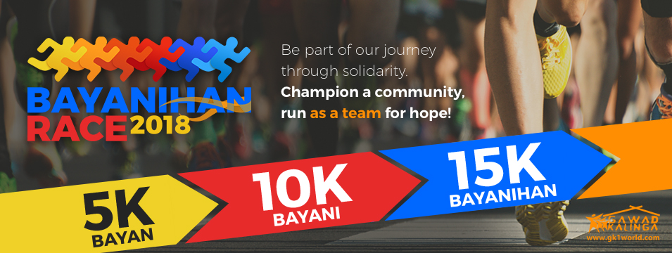

Operation Walang Iwanan: Paraisong Pambata

Thanks to our partners and the individuals who gave, Team GK was able to bring the hope and spirit of Christmas to over 3,000 children (3-12 years old) and a little over 2,000 adults in Compostela, Compostela Valley and Cateel, Davao Oriental last December 28, 2012, through Operation Walang Iwanan: Paraisong Pambata.
Despite the tragedy brought by Typhoon Pablo, we ended 2012 with hope, love and solidarity in action amongst partners, volunteers and survivors. Below is an account of one of the GK volunteers who as part of experience Paraisong Pambata in Cateel:
A Thousand Smiles and More
by Arianne Rodriguez
What makes you smile, a flashing view of a brand new gadget on your hands, a dashing designer cocktail dress, an expensive pair of sneakers…or a buffet of scrumptious food perhaps?
Lovely sight that is, for sure. For you, they’re worth the world on a spur of that moment when you discovered it’s all yours to have.
On December 28, 2012, Gawad Kalinga saw thousands of those smiles during Operation Walang Iwanan Paraisong Pambata: A Christmas Party for Kids. Loaded with rice meals, brand new toys and slippers, boxes of milk, ice cream, candies and a lot more, the GK convoy conquered rain and thick fog late in the night of the 27th to reach the typhoon-struck land of Cateel and bring Christmas joy to the many kids who experienced the terror of Pablo and who might not have experienced Christmas as it should be.
When the program and logistics were set, the kids were gathered inside the St. James church for the event opening. Cosplayers hyped them up with their dance numbers. Even Jollibee was there to dance and play with them. Oh how happy the kids were! You can only imagine their faces — emotions mixed with joy and amazement. Some of them have never even seen Jollibee or Cosplayers all their lives until then.
One kid said, “Masaya po ako kasi ngayon lang po ako nakakita ng mga ganyan.” (I’m very happy because this is my first time to see things like this!)
After the program came the food and gift giving. Amidst the heat of the noontime air, the little ones patiently waited for their turn. It’s definitely worth it, they say, because they don’t always receive gifts and most of them spent Christmas in makeshift shelters without food. What we brought would only suffice them temporarily, but the real message we wanted to share is the thought that “Christmas lives” even in times like this. Through it all, real friends will always be around — “Walang Iwanan”.
Our Little Friends
As all the kids were lining up, there was this one kid who was pulling a little wooden cart he actually made himself. He lined up happily and after receiving his food and gifts, he placed them in the cart and covered them secure with his old shirt. Shortly, he joined the other kids who have also received their gifts. We talked to him and found out that the 9-year old boy-with-the-cart’s name was Christian. His parents already died years ago. His younger sibling died during the typhoon. He usually stays around the plaza and the town’s people, out of concern, look after him every day. At the early age of nine, he had already experienced much of life’s difficulties. Yet at that moment, we didn’t see any trace of sadness in his face. He was happy that he received gifts, that he had milk and that he had seen us. If it was you in his place, would you feel the same?
In the middle of our chats, another boy was sitting on a pillar behind us, eating. I noticed he didn’t finish his chicken meal so I asked him why. He said he’s saving it for later. He said the food was really delicious and he’s so happy he was able to eat such kind of food. Then I asked him if he can give me his leftover food instead because I haven’t eaten my lunch yet. It was a joke you know but guess what… He offered me the chicken meal he carefully saved up for the next time he becomes hungry!
Of course I refused it and told him that he could keep it. I was very much inspired I could almost cry! He wanted the food so much, even divided it carefully so he can still eat it again soon after. But because I said I was hungry and asked if I could have it, without any second thought, he offered it to me. How generous!
Yes, we brought them entertainment, food and gifts. But they gave us happiness and inspiration in return, such priceless presents.
THANKS…
It was one big party event for the children. As it happened in Cateel, the same program was simultaneously running in ComVal. When all's said and done, Gawad Kalinga was able to make roughly 3,000 kids (and 2,000 adults) feel the spirit of Christmas.
Thanks to YOU who supported this delightful event for our dear children. Without you, this wouldn’t be realized. Big or small, your contribution has become the children’s joy. You know who you are. :)
Until now, I believe it's not what you have lost that matters the most, it's what you STILL HAVE...that's the miracle. :)
May God bless GK more. May God bless us all!
GK Enchanted Farm

GK Enchanted Farm is a destination for social tourism and social enterprise incubation located in the fields of the Philippine countryside. Visit us to find enchanting people and their inspiring stories. Drop us a message to find out about our Farm Hope Tours and Packages.
Every 3rd weekend of the month, we hold Startup Business Camps for aspiring social entrepreneurs. Message us for more information about the program. #GKEnchantedFarm #FarmVillageUniversity
A Message from Billy Santos shared in GK Enchanted Farm official fb page @gkenchanted farm:
“I feel blessed to be able to share knowledge I got from a good university and my experience as an agri-entrepreneur to these bright kids. I am also lucky to journey with friends I have met along the way - kindred spirits who are full of hope for the nation and the Filipino people, and brimming with passion to make a better world. Even though I am still young, I can say that I don't think there's a better way to spend the rest of my life."
Arrived at GKEF 2 years ago, Billy Santos tells the challenges he faced when he decided to become a social entrepreneur and developed Kabutehan, a Filipino mushroom company.
"When I quit my position as Physics instructor at a prestigious University, a lot of people had questioned my decision. Who wouldn't? It was a good first job for a fresh graduate while you took your graduate studies, thus opening more opportunities. I knew, however, that had I chosen this path for my career, it would have taken me away to another country. For most people I guess that's what they dream of, and I have nothing against it. It is a worthwhile dream to pursue. As for me, staying in the Philippines and finding a way build a great nation was always something that had a great appeal, something worth dedicating one's life to. So when I met Tito Tony and the rest of Gawad Kalinga during this period of my life, the decision to take the leap was easy. I quit my job and joined the team to start building the GK Enchanted Farm right then and there.
This decision, however, met great disapproval. It could be summed up in the statement repeated to me over and over again by people around me: "Are you stupid? You went to a good university, had a good job, and now you are throwing all of these away to be a farmer?"
The opposition to my decision, however, did not deter me from what I knew I had to do. I knew, even then, the immense opportunities that lay ahead; but beyond that, I knew this was something important to me, my future family, and my country. So rather than shake me from my decision, that statement set me towards building my own enterprise that will create sustainable opportunities for our farmers. I have started Kabutehan, an enterprise dedicated to building a globally leading mushroom industry that creates shared value for all the players, especially our Filipino farmers.
I still teach now. I teach the kids of farmers how to do ratio and proportion, and see if they have the right number of male ducks for every female ducks at the farm. I feel blessed to be able to share knowledge I got from a good university and my experience as an agri-entrepreneur to these bright kids. I am also lucky to journey with friends I have met along the way - kindred spirits who are full of hope for the nation and the Filipino people, and brimming with passion to make a better world. Even though I am still young, I can say that I don't think there's a better way to spend the rest of my life."
Inspired by Billy’s story? Join a Start-Up Business Camp and discover more about social entrepreneurship at the Enchanted Farm.
Kusina ng Kalinga

Hunger ends when caring begins.
There are about 15M Filipino children who face the threat of not realizing their full potential – not growing to be as tall, as healthy, nor as bright as they can be – because they are suffering from hunger today as they grow up. The effects of hunger and poverty on children could become irreversible, especially if we’re not there for them NOW, when they need us the most.
Though the problem is massive, we believe that ending hunger is possible. But for our response to have a commensurate impact, we must CARE TOGETHER.
Kusina ng Kalinga is GK’s anti-poverty campaign to end hunger among Filipino children.
Our kitchens cook daily nutritious lunch meals for children in public schools, in the streets, and in conflict areas to end hunger and malnutrition. But just as hunger is a condition that goes beyond empty stomachs, our model also goes beyond feeding.
Our kitchens are also hubs for bayanihan, where parents, volunteers, teachers, school and community administrators, LGU’s, private individuals, organizations, and corporate partners are all essential for the KnK model to work.
Through Kusina ng Kalinga, we build caring communities for our young. It is where lunchboxes don’t just contain meals, but also carry the commitment to care together until no child is left hungry.
And as for the kids, each lunchbox builds hope - that because we are ending their hunger today, they can start imagining tomorrow
We go where kids are.
By providing lunch meals to kids who everyday are left with no choice but to face the threats of poverty, disaster, and/or conflict, we give their bodies the nourishment it needs so that they can have the fighting chance to grow up to their full potential.
We cook by the thousands daily.
Each Kusina ng Kalinga is scaled to cook up to 5,000 meals a day with parent volunteers serving as the backbone of our daily operations. Our kitchens prepare nutritious, balanced, and delicious lunch meals packed and distributed in colorful lunch boxes.
We build communities.
More than the food, the constant presence of a community committed to give kids the special care they need inspires in them something equally important – HOPE. And with this hope, our kids can start to look beyond hunger and dream brighter futures for themselves.
You can be a part of this community.
Bayanihan Race

Can you carry a brother to the finish line?
The culture of walang iwanan can be practiced in many different ways. In Gawad Kalinga, we share the gift of presence to families who are starting to journey out of poverty.
In Bayanihan Race 2018, we will run together towards a common goal. Together with volunteers and community members, we will race and cross the finish line together. We will leave no one behind!
Bayanihan Race is the first-ever national running event promoting wellness and camaraderie across the Philippine archipelago. You run for fitness, you also run for the community.
Be part of our journey through solidarity. Champion a community, run for hope!
Register now!